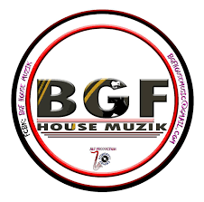

IT'S MORE THAN
MUSIC TO US
An all-ages, multivenue music event, the Burgersfort Jazz FEstival brings free jazz to downtown's beautiful Tubatse Town, as well as inside the nearby Burgersfort Cultural Center.
 Watch video
Watch video
Burgersfort Jazz Festival
Check back for 2022 updates
The oldest of Burgersfort's free music festival an incredibly diverse lineup, which includes free neighborhood concerts leading up to the main show at Tubatse Crossing each December. The range of artists comprising the Burgersfort Festival runs the gamut from Jazz legends to infuential modern masters and crucial new voices in the genre's continuing evolution
Learn More